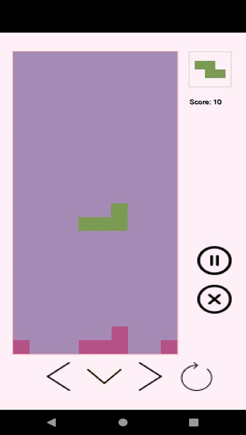

Автоматизированная система "Игра "Тетрис" с функциями администратора"
Введение
Автоматизированная система "Игра "Тетрис" с функциями администратора" может использоваться пользователями любых возрастов для приятного времяпрепровождения и отработки навыков игры в тетрис
Программа разрабоотана для операционной системы Android, использует базу данных MySQL. Поставляется в виде запускаемого apk-файла.
Системные требования: объем ОЗУ - не менее 3 Гб, объем свободного дискового пространства - не менее 17 Гб.
Запуск, авторизация и регистрация
При запуске приложения открывается экран заставки приложения.
По нажатию на него система переходит к экрану входа. В системе предусмотрено две роли пользователя: администратор и игрок.
Здесь необходимо выбрать – осуществить вход под уже существующим логином или зарегистрироваться (для пользователя) или просто выбрать «Вход» (для администратора).
При нажатии на «Вход» открывается экран аутентификации. Пользователь вводит логин и пароль, по которому система идентифицирует игроков и администратора.
При нажатии на «Зарегистрироваться» открывается экран регистрации. Необходимо ввести логин, пароль и повторный пароль.
Режим администратора
Администрирование
После входа в систему пользователь переходит к экрану администратора.
При нажатии на уже существующий стакан открывается экран редактирования стакана.
При нажатии на кнопку «Добавить» в разделе «Стаканы» осуществляется переход к экрану создания стакана.
При нажатии на уже существующую фигуру открывается экран редактирования фигуры.
При нажатии на кнопку «Добавить» в разделе «Фигуры» осуществляется переход к экрану создания фигуры.
В разделе «Звуковое сопровождение» администратор может выбрать какая музыка будет использована в игре или ее не будет вовсе, выбрав соответствующий пункт списка аудио.
Для того, чтобы добавить новый аудио файл, нужно нажать на кнопку «Добавить». По нажатию на нее приложение обращается к файловой системе смартфона.
Создание и редактирование стакана
Аутентификация и регистрация
Для того, чтобы начать работу в приложении в режиме пользователя, необходимо запустить приложение, перейти на экран входа и выбрать «Войти» или «Зарегистрироваться».
При аутентификации пользователя необходимо ввести логин и пароль.
При регистрации необходимо ввести логин, пароль и повторить ввод пароля.
Функции игрока
После входа в систему пользователь переходит к экрану игрока.Для того, чтобы открыть экран новой игры необходимо нажать «Новая игра».
Чтобы продолжить последнюю незавершенную игру, необходимо нажать «Продолжить».
На экране также отображается рейтинг игры, по умолчанию игры отсортированы по очкам. По нажатию на «Время» список игр будет отсортирован по времени.
По нажатию на «?» откроется окно со справочной информацией, информацией о системе и разработчиках.
По нажатию на «Настройки» открывается окно пользовательских настроек.

Настройки
На экране настроек можно включить/выключить показ следующей фигуры, звуковое сопровождение, выбрать критерий подсчета очков.
Запуск новой игры
По нажатию на «Новая игра» на экране игрока открывается экран выбора элементов новой игры.
На данном этапе необходимо выбрать для дальнейшей игры стакан и звуковое сопровождение. По нажатию на кнопку «Далее» открывается экран игры.

Процесс игры
На экране игры непосредственно происходит процесс игры. Можно производить действия с фигурами – двигать, поворачивать, перемещать, можно поставить игру на паузу или закрыть.
Завершить игру
Для того, чтобы завершить игру, необходимо нажать кнопку "Х" на экране игры.
Основные ошибки
Если система при регистрации или аутентификации определяет, что есть незаполненные поля, то отображает сообщение «Все поля должны быть заполнены».
При регистрации пароль и повторно введенный пароль проверяются на идентичность.
При создании фигур происходит их проверка на уникальность и целостность. Если создаваемая фигура уже есть в базе данных, то системой будет выведено сообщение о неуникальности фигуры. Если создаваемая фигура имеет разрывы, то системой будет выведено сообщение о разрыве фигуры.
Выход из программы
Выход из программы осуществляется с помощью системной кнопки "Домой" смартфона.